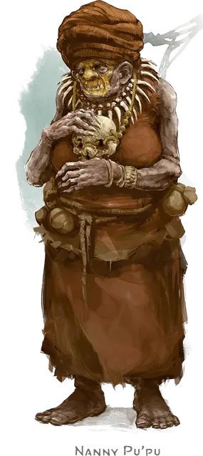

Нанни Пупу
Nanny Pu'pu
Средняя Фея (Фея), нейтрально-злая, именной НИП

Класс Доспеха 17 (природный доспех)
Хиты 82 (11к8 + 33)
Скорость 30 футов
| мод | спас | ||
|---|---|---|---|
| СИЛ | 18 | +4 | +4 |
| ЛОВ | 12 | +1 | +1 |
| ТЕЛ | 16 | +3 | +3 |
| мод | спас | ||
|---|---|---|---|
| ИНТ | 13 | +1 | +1 |
| МДР | 14 | +2 | +2 |
| ХАР | 14 | +2 | +2 |
Навыки Восприятие +4, Магия +3, Обман +4, Скрытность +3
Чувства тёмное зрение 60 футов, пассивное Восприятие 14
Языки Общий, Драконий, Сильван
Опасность 3 (700 опыта)
Бонус мастерства +2
Особенности
Амфибия. Нанни может дышать и воздухом и под водой.
Врождённое колдовство. Базовой характеристикой Нанни является Харизма (Сл спасброска от заклинания 12). Она может накладывать следующие заклинания, не нуждаясь в материальных компонентах:
• Неограниченно: злая насмешка [vicious mockery], малая иллюзия [minor illusion], пляшущие огоньки [dancing lights].
Подражание. Нанни может подражать звукам животных и голосам гуманоидов. Существо, слышащее эти звуки, может понять, что это подражание, если совершит успешную проверку Мудрости (Проницательность) Сл 14.
Обряд украденной жизни. Нанни Пупу – почитатель Миркула, Владыки Костей, и знает ритуал трансформации, который может превратить мёртвого гуманоида в зомби-существо. Персонажи, которые приносят своих мёртвых товарищей в Мбала, могут попросить Нанни Пупу превратить их в ходячих мертвецов. Однако она ничего не делает бесплатно. Уничтожение гнезда птералюдов – это наименьшая плата, которую она примет за этот ритуал. Она также может запросить прядь волос и несколько ногтей Командующего Костолома (см. «Лагерь возмездия», стр. 54) или одну из радужных чешуек Саджа Н’базы (см. «Оролунг», стр. 70). И конечно будет использоваться их для сотворения злой магии.
Нанни Пупу – это единственное существо в Чульте, кто может провести Обряд украденной жизни. Ритуал занимает 1 час и требует трёх вещей: в первую очередь – в основном целый гуманоидный труп, драгоценный камень стоимостью не менее 100 зм и, что самое тревожное, жертвоприношение другого гуманоида. Если персонажи не хотят жертвовать одним из своих, чтобы спасти падшего товарища, Нанни Пупу рекомендует им захватить гоблина, грунга или другого гуманоида и принести его ей.
Нанни Пупу убивает жертву, заключая её дух в драгоценном камне и волшебным образом вставляет камень в лоб мёртвого гуманоида. После того, как Нанни Пупу произнёс молитву к Миркулу, дух жертвы получает знания и личность гуманоида, которым он когда-то был, по сути имитируя душу гуманоида. Когда ритуал завершён, мёртвый гуманоид просыпается, как от глубокого сна, хотя он уже не жив.
Персонаж, трансформированный этим ритуалом в ходячего мертвеца, восстанавливает все свои хиты и сохраняет свои характеристики, кроме тех что указаны здесь:
• Персонаж считается нежитью, а не гуманоидом и подвержен воздействию всех эффектов, которые нацелены на нежить. Персонаж не нуждается пище, воде, сне или воздухе.
• Максимальные хиты персонажа снижается на 1к4 каждый день на рассвете, означающий физический распад тела. Ни одно заклинание или эффект не может остановить или противодействовать этому распаду.
• Если максимальные хиты персонажа падают до 0, драгоценный камень, встроенный в лоб персонажа, разрушается, и персонаж снова становится трупом.
Персонаж, который был превращён в ходячего мертвеца, а затем воскрешён или поднят из мёртвых, теряет всю память о том времени, когда он был нежитью, но он не теряет ни уровни, ни опыт, полученный за то время, когда он был нежитью.
Действия
Когти. Рукопашная атака оружием: +6 к попаданию, досягаемость 5 футов, одна цель. Попадание: Рубящий урон 13 (2к8 + 4).
Иллюзорная внешность. Нанни покрывает себя и все, что несет и носит, магической иллюзией, заставляющей её выглядеть как другое существо примерно её размера и с гуманоидным телом. Иллюзия оканчивается, если карга умирает, и карга может окончить её бонусным действием.
Изменения, внесенные эти эффектом, не проходят физическую проверку. Например, кожа карги может выглядеть гладкой, но тот, кто её коснется, почувствует морщины. Если же полагаться только на зрение, то существо должно действием совершить проверку Интеллекта (Расследование) Сл 20 и преуспеть, чтобы понять, что была использована иллюзия.
Невидимая ходьба. Нанни магическим образом становится невидимой, пока не атакует, или не наложит заклинание, либо пока не прервет концентрацию (как при концентрации на заклинании). Будучи невидимой, она не оставляет физических следов, так что выследить её можно только с помощью магии. Все снаряжение, которое она несет и носит, становится невидимым вместе с ней.
Описание
Нанни Пупу – зелёная карга, играющая роль древней старушки. Она утверждает, что все остальные жители деревни были убиты много лет назад крылатыми существами, которые живут на южной стороне плато. Она единственная выжившая – слишком жилистая или слишком хитрая для хищников. Она питается корнями из своего сада, птицами и ящерицами, которых она иногда ловит в силки. Если спросить её имя, ей нужно несколько минут, чтобы вспомнить, что жители деревни называли её Нанни Пупу.
Карга хочет две вещи от приключенцев: чтобы они уничтожили гнездо птералюдов на южной стороне плато, а затем стать её едой на несколько месяцев. Она вряд ли нападёт на них открыто. Она предпочла бы войти к ним в доверие и убить их одного за другим, как это было с жителями деревни.
Нанни Пупу не совсем одна. С свистком она может вызывать 2к6 летающих обезьян [flying monkey], которые живут деревьях, и у неё есть мясной голем [flesh golem], похороненный в небольшой могиле за её маленькой хижиной. Карга использует летающих обезьян для сбора пищи и припасов, но они не будут сражаться за неё. Однако голем будет; он вырывается из земли в качестве бонусного действия, если ему приказано атаковать.